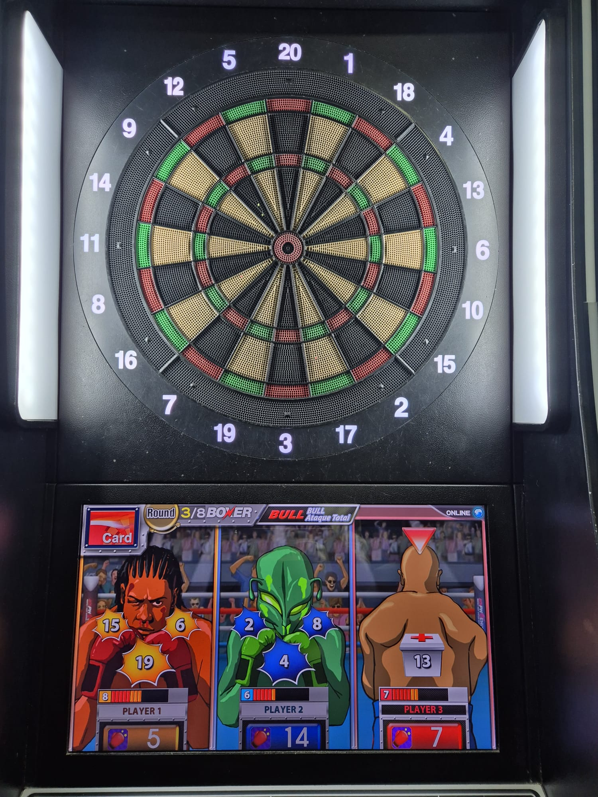

El fascinante mundo de los dardos
En nuestra plataforma, contamos con una amplia variedad de modos de juego para que disfrutes al máximo de la experiencia. Entre los más populares se encuentra el modo 501, que es el clásico y más común. En este modo, cada jugador comienza con 501 puntos, y el objetivo es reducirlos a exactamente cero mediante lanzamientos de dardos. La partida debe finalizar con un lanzamiento a una casilla doble o al centro de la diana. Además, es importante controlar el total acumulado, ya que si te pasas de los puntos restantes, el turno no será válido y mantendrás el puntaje anterior.
Otro modo destacado es el modo Críquet, que ofrece una dinámica diferente. En este juego, los jugadores deben primero "cerrar" ciertos números en la diana, generalmente del 15 al 20 y el centro. Para cerrar un número, necesitas acertarlo tres veces. Una vez cerrado, puedes comenzar a sumar puntos al acertar ese número nuevamente, a menos que el oponente también lo haya cerrado. El objetivo es cerrar todos los números y tener más puntos que tu rival al final de la partida.
Por último, el modo Boxeo es perfecto para quienes buscan una experiencia más competitiva y estratégica. En este modo, cada jugador comienza con tres "vidas" o puntos de resistencia. Cada vez que tu oponente acierta un lanzamiento en las áreas designadas como puntos de impacto, pierdes una vida. El ganador es quien quede en pie al final del enfrentamiento o quien haya logrado acertar más golpes. Este modo combina precisión con táctica, ya que los lanzamientos deben ser calculados para maximizar el daño al rival mientras proteges tu puntuación. Con estas opciones y muchas más, ofrecemos modalidades que se adaptan a distintos estilos de juego y niveles de habilidad. ¡Anímate a probarlas todas!